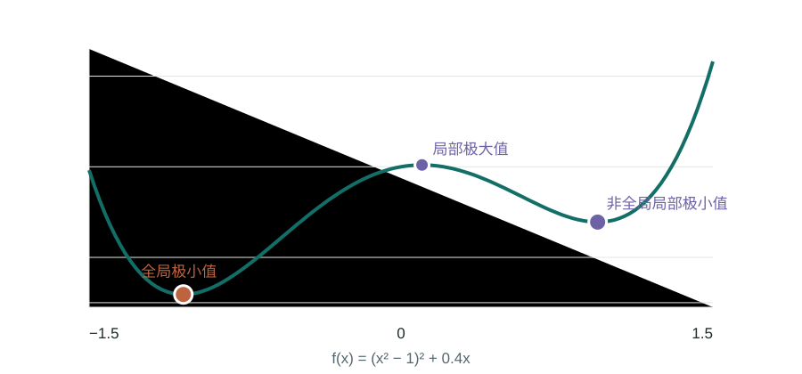

全局最优与局部最优
局部算法通常只探索当前点附近的地形。非凸目标函数可能有多个局部极小值，找到一个稳定的低点，不等于证明它是全局最优。
两个不同的最优性概念
设可行域为 Ω。点 x* 是全局极小点，如果对所有可行点 x 都有 f(x*)≤f(x)。它是局部极小点，如果存在一个以 x* 为中心的邻域，使该邻域内的所有可行点都满足 f(x*)≤f(x)。
全局最优比较的是整个可行域；局部最优只比较附近。全局极小点一定是局部极小点（在通常的定义下），但局部极小点不一定是全局极小点。若把不等式对邻域内其他点都变成严格小于，则称为严格局部极小点。
一个有两个谷底的函数
考虑非凸函数：

求导得到：
驻点方程有三个实根，数值近似如下：
| 驻点 x | 函数值 f(x) | 分类 |
|---|---|---|
| −1.04668 | −0.40954 | 全局极小点 |
| 0.10103 | 1.02010 | 局部极大点 |
| 0.94565 | 0.38944 | 非全局局部极小点 |
由于四次项系数为正，函数在 |x| 趋于无穷时趋于正无穷；所有驻点只有上述三个。比较两个局部极小点的函数值后，左侧谷底更低，因此它是全局极小点。
初始点为什么重要
梯度下降按 更新。步长 α 合适时，算法会沿着局部下降方向前进，但最终落在哪个谷底取决于起点和目标函数地形。局部极大点附近的分界位置把不同起点分配到不同吸引域。
这不是说梯度下降必然收敛到某个局部极小点：步长过大可能振荡或发散；函数不光滑、梯度不准确或数值误差也会影响轨迹。图中的吸引域只针对本文这个函数和指定的固定步长演示。
凸性带来的保证
如果目标函数在凸可行域上是凸函数，那么任何局部极小点都是全局极小点。若目标函数严格凸，则全局极小点至多一个。凸性因此把“附近没有更好的点”提升为“整个可行域都没有更好的点”。
反过来，非凸并不意味着每个实例都难，也不意味着局部算法一定失败；它意味着不能仅凭局部驻点就自动获得全局最优保证。还需要额外结构、下界证明或全局搜索策略。
实践中怎样降低风险
- 多起点：从不同初始值运行局部算法，比较结果；这能增加发现更好谷底的机会，但不能单独证明全局最优。
- 利用结构：检查目标函数和可行域是否凸，或是否存在可分解、可松弛的结构。
- 做独立验证：比较目标值、约束违反、梯度范数和不同算法的结果。
- 需要证明时使用全局方法：例如分支定界、区间方法或可验证的全局下界；它们通常需要更多计算资源。
改变梯度下降起点
下面使用固定步长 α=0.01 对本文函数执行梯度下降。移动起点，观察轨迹收敛到哪个谷底。这个演示说明初始点的影响，不构成全局最优性证明。
梯度下降起点实验
Python：两个起点，两种结果
"""Illustrate two attraction basins for a nonconvex objective."""
def objective(x: float) -> float:
return (x * x - 1.0) ** 2 + 0.4 * x
def gradient(x: float) -> float:
return 4.0 * x * (x * x - 1.0) + 0.4
def gradient_descent(start: float, step: float = 0.01, iterations: int = 5000):
x = start
for _ in range(iterations):
next_x = x - step * gradient(x)
if abs(next_x - x) < 1e-11:
x = next_x
break
x = next_x
return x
if __name__ == "__main__":
left = gradient_descent(-1.5)
right = gradient_descent(1.5)
print(f"start -1.5 -> x={left:.6f}, f={objective(left):.6f}")
print(f"start +1.5 -> x={right:.6f}, f={objective(right):.6f}")
assert abs(left - (-1.04668)) < 1e-3
assert abs(right - 0.94565) < 1e-3
assert objective(left) < objective(right)
练习与参考
练习：把函数中的线性项 0.4x 改为 0，重新寻找驻点。两个谷底的函数值会发生什么变化？这时全局极小点是否唯一？
自检：函数变为 (x²−1)²，两个极小点 x=−1 和 x=1 的函数值均为 0；两者都是全局极小点，因此全局解不一定唯一。
- Jorge Nocedal, Stephen J. Wright, Numerical Optimization, 2nd ed., Springer, 2006，Chapter 1 “Global and Local Optimization” 与 “Convexity”。出版社书目。